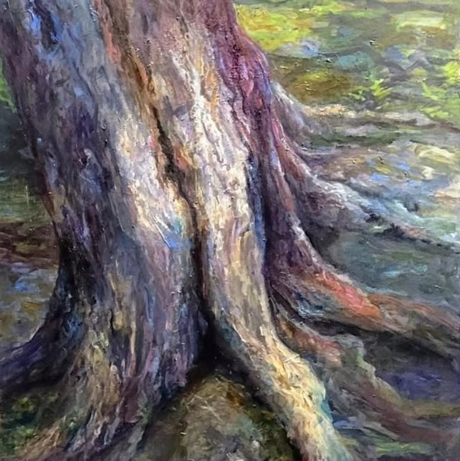
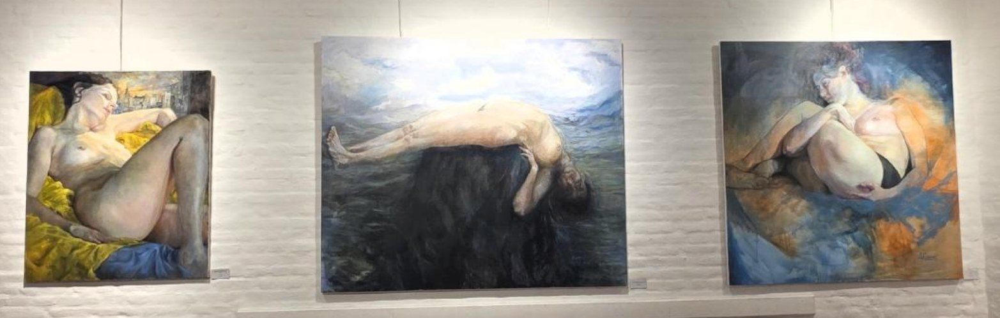
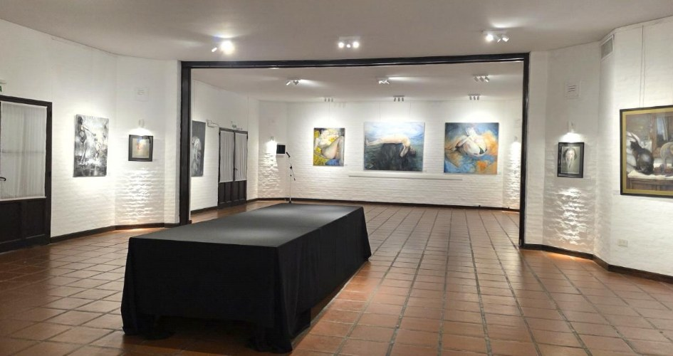
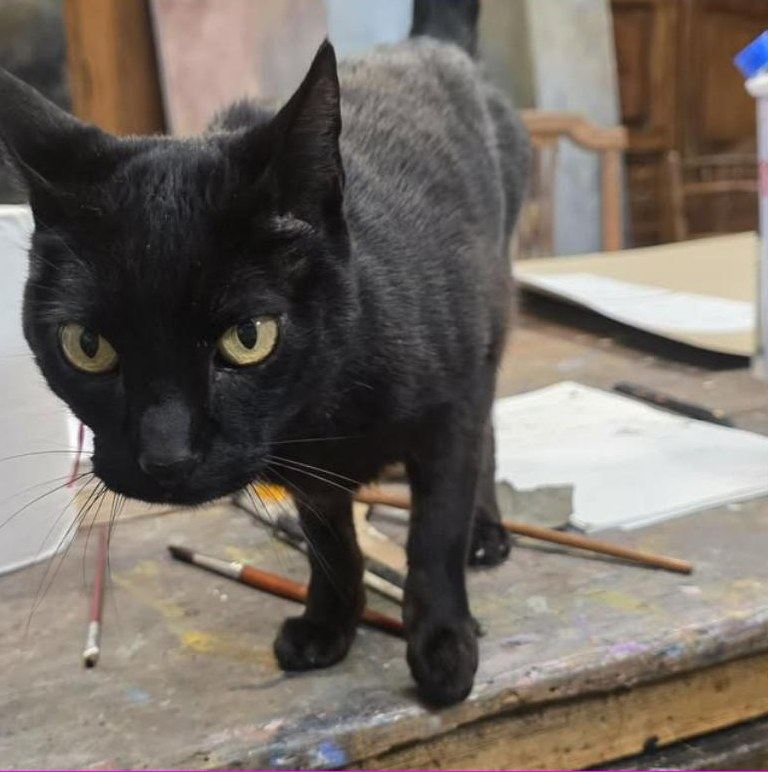
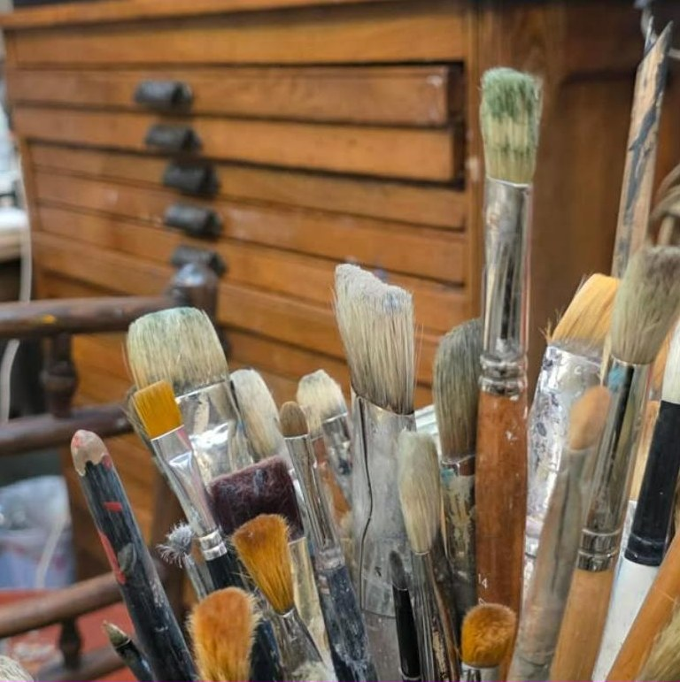

01
Rostros
Retratos al pastel de personas con historia: miradas atentas, arrugas, anteojos, un libro entre las manos. Le interesa el gesto quieto, el momento en que alguien está consigo mismo.
Pintora · San Isidro, Buenos Aires
Rostros, cuerpos y árboles pintados de cerca, con mucho color y mucha luz.
Lo que pinta
Retratos al pastel de personas con historia: miradas atentas, arrugas, anteojos, un libro entre las manos. Le interesa el gesto quieto, el momento en que alguien está consigo mismo.
Figuras que flotan, se recuestan o se repliegan sobre telas y aguas azules y ocres. El cuerpo y el fondo se mezclan, y la pincelada queda a la vista.

Troncos, raíces y ramas pintados de cerca, con violetas y verdes inesperados. Entre las ramas aparece un benteveo: la naturaleza del barrio, mirada con atención.
Su paleta
Azules de agua, ocres y naranjas cálidos, amarillos ácidos y violetas en las sombras.
La obra
Cargando obras…
Muestras

Inauguración el viernes 11 de septiembre; abierta hasta el 19 de septiembre. Martín y Omar 339, San Isidro.


En el taller
En el taller la acompaña Lupe, su ayudante felina, que —según cuenta Analía— no deja escapar ningún detalle.

Contacto
Para consultas, encargos o visitas al taller. El mensaje le llega directamente a Analía.
@rovereanalia